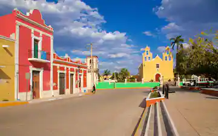
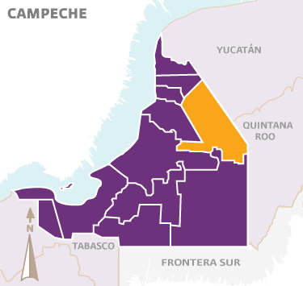
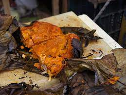
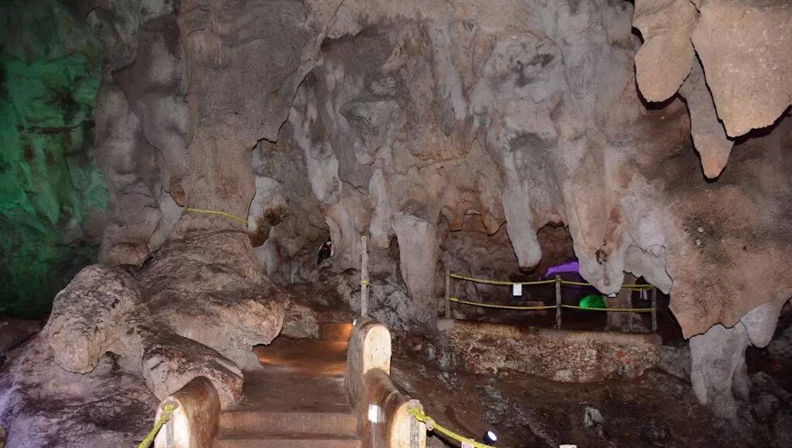

La región donde se asienta la ciudad de Hopelchén fue una importante zona de la cultura maya, por lo que su población era muy elevada, Hopelchén fue fundada aproximadamente en 1621 como un pueblo de congregación, es decir un asentamiento para atraer y evangelizar a los pobladores mayas de la región, pronto llegó a conjuntar a más de 20,000; sin embargo, como en el resto de la península, los mayas fueron sumamente reacios a aceptar la conquista española y Hopelchén fue uno de los centros de esa rebeldía, aunque por su posición fue una población intermedia entre las zonas plenamente conquistadas del camino que unía a San Francisco de Campeche con Mérida y el interior de la península donde se refugiaban los mayas rebeldes.
El municipio tiene un escudo de armas que se describe de la siguiente manera: en la parte inferior del escudo se encuentran cinco pozos, representa el nombre de Hopelchén; en el centro se encuentra el estado de Campeche sobresaltando el municipio; en la parte superior derecha, un grupo de maderas, por ser productor de maderas finas. En la parte superior izquierda una pirámide maya, recordando que fue lugar donde se asentó parte de la cultura maya. Arriba del escudo una mazorca indicando que este municipio produce maíz en grandes cantidades.
El municipio de Hopelchén, se localiza al este del estado; se ubica en las coordenadas geográficas 89° 06' y 90° 09' de longitud oeste y 17° 48' y 20°11' de latitud norte de Greenwich. Sus límites son: al norte con el vecino estado de Yucatán; al sur con el municipio de Calakmul, y al oeste con los municipios de Champotón, Campeche, Tenabo y Hecelchakán
Sus platillos principales son la cochinita pibil, pavo relleno, panuchos, empanadas y codzitos. También elaboran dulce de papaya, de calabaza, de camote, macal, yuca y ciruela. Sus bebidas tradicionales son el pozol y el arroz con leche.
Los centros turísticos con que cuenta el municipio son básicamente los monumentos coloniales y arqueológicos mencionados anteriormente, así como son dignas de visitarse las Grutas de Chuncedro y las de Xtacumbilxuna"an, este vocablo significa "Mujer Escondida", se localiza cerca de la localidad de Bolonchén de Rejón. Esta es una gruta abierta entre las rocas que presenta varios niveles, que conforme se recorren se van haciendo más interesantes.
